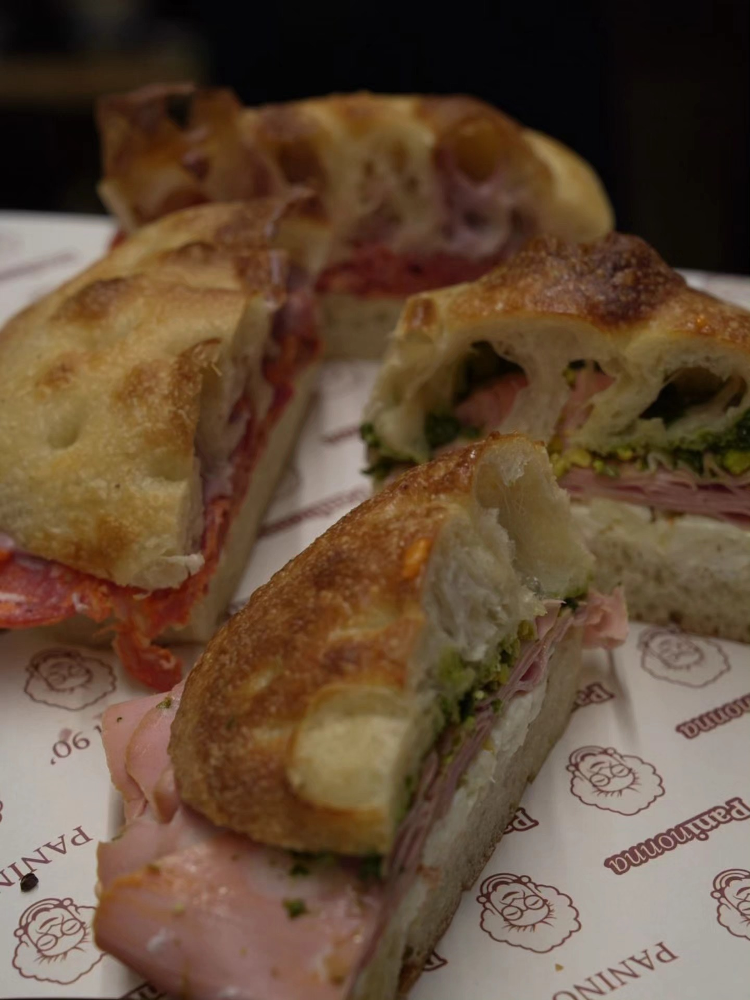
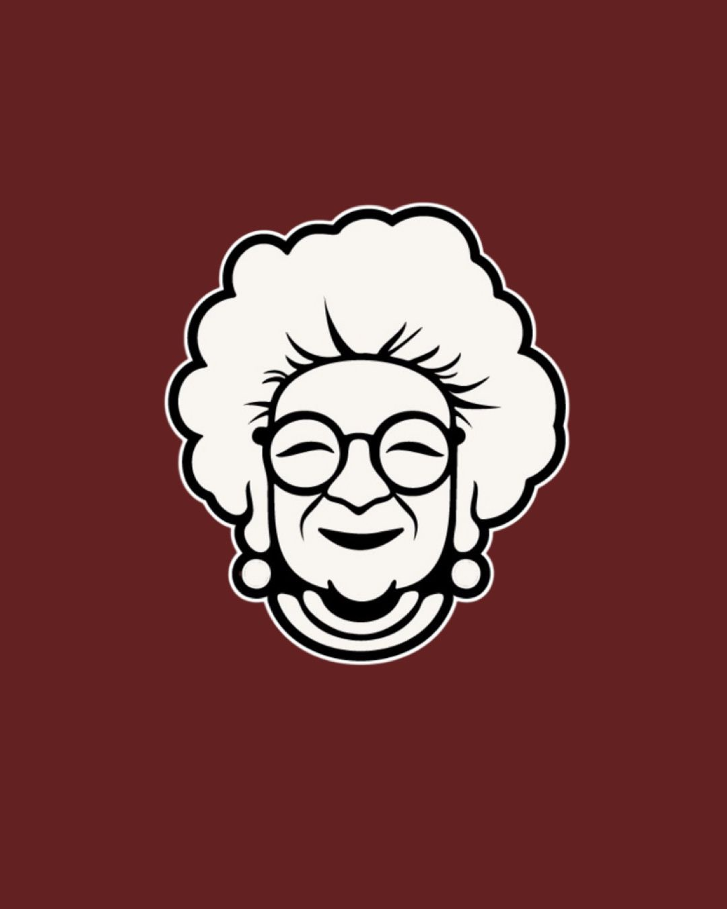
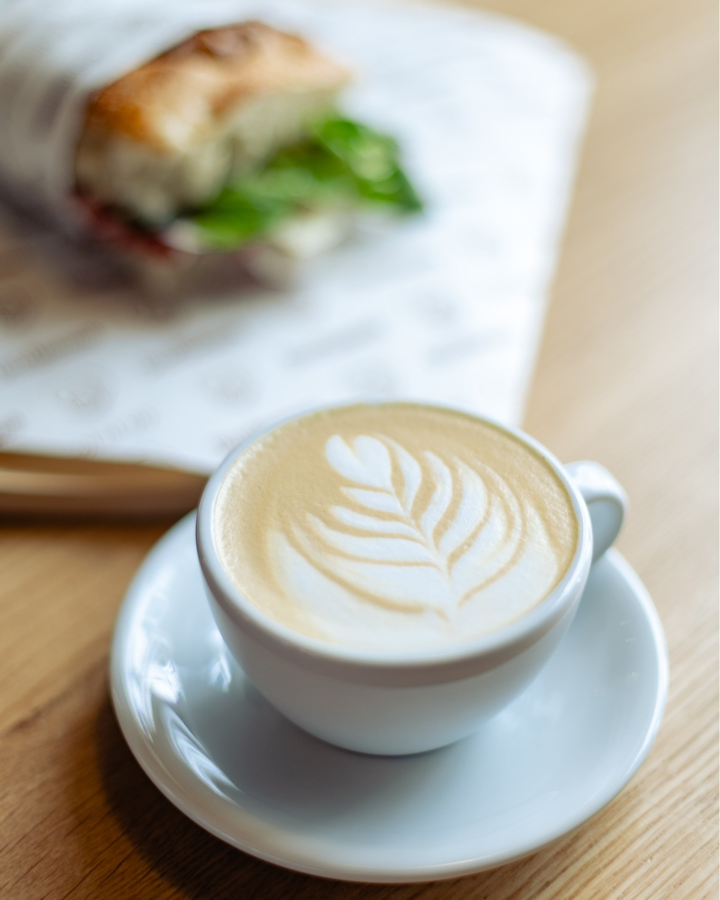
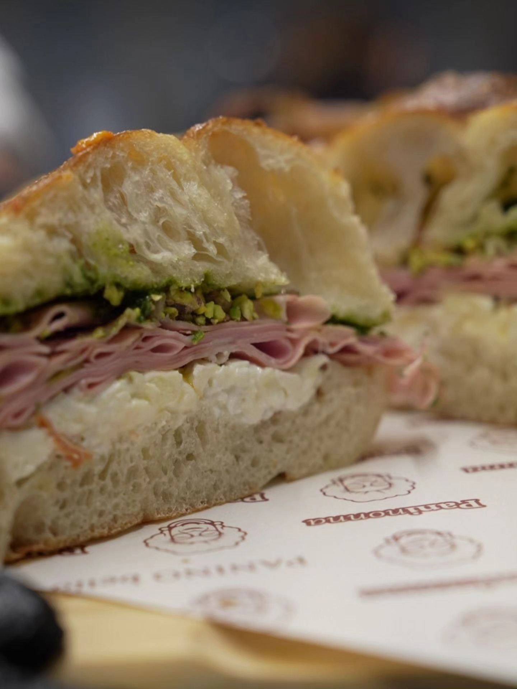
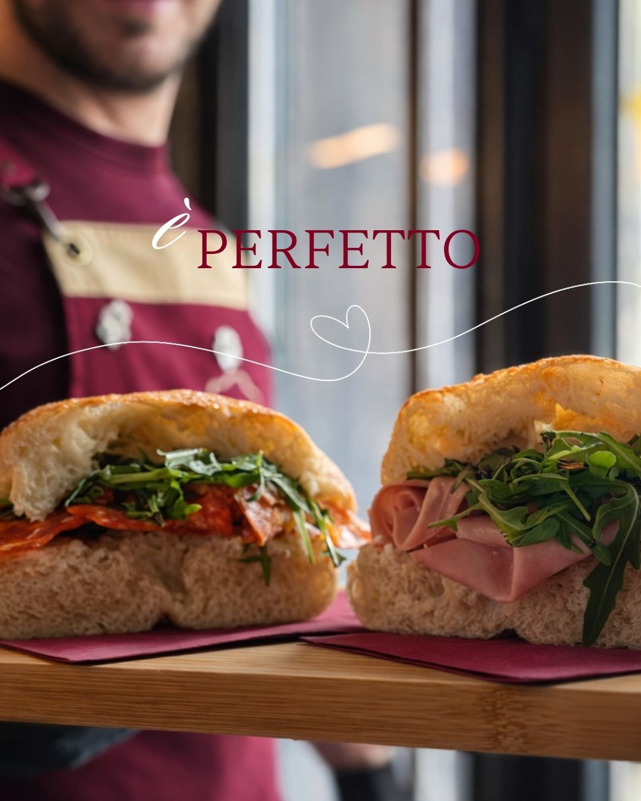
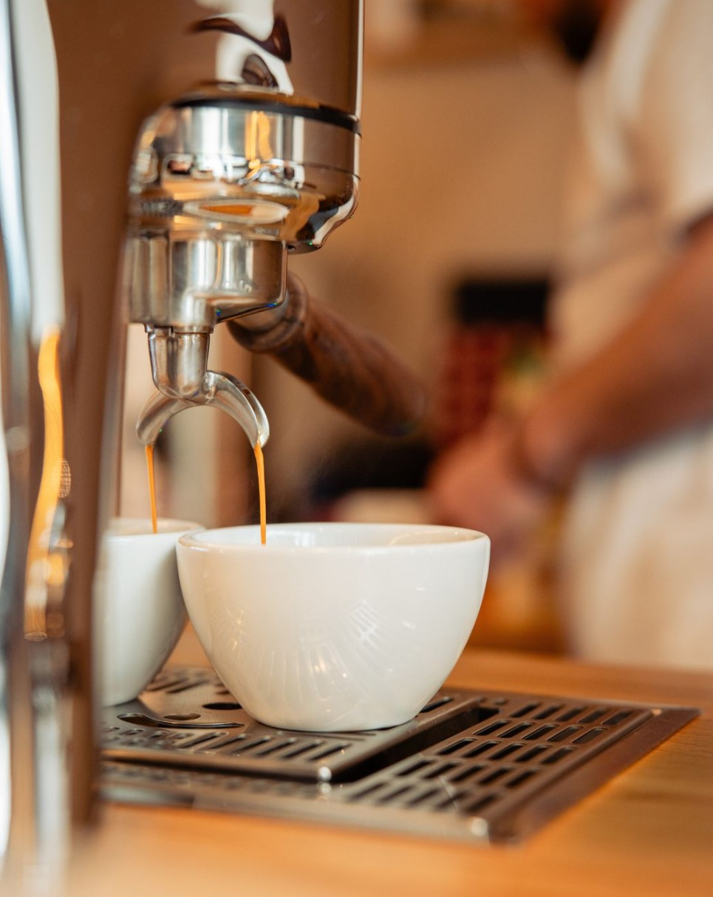

Mortadella
Amore
Mortadella, straciatella si pesto de busuioc facut in casa.
42 RON
Paninonna RezervariPanini artizanali & cafea
O oprire calda pentru panini rumeniti, cafea bine trasa si pauze simple, asezate, cu gust de ingrediente alese.
Panini presati cald, cu interior moale si coaja bine rumenita.
Espresso, cappuccino si bauturi reci pentru dimineti si pranzuri.
Retete clare, ingrediente bune si servire rapida, fara complicatii.
Cafea
Cafeaua e gandita sa mearga natural langa panini: espresso intens pentru dimineti rapide, cappuccino cremos pentru pranzuri lente si cold brew cand orasul cere ceva rece.

Galerie



Viziteaza-ne
Pentru program, locatie si comenzi, actualizeaza detaliile de mai jos cu datele restaurantului.